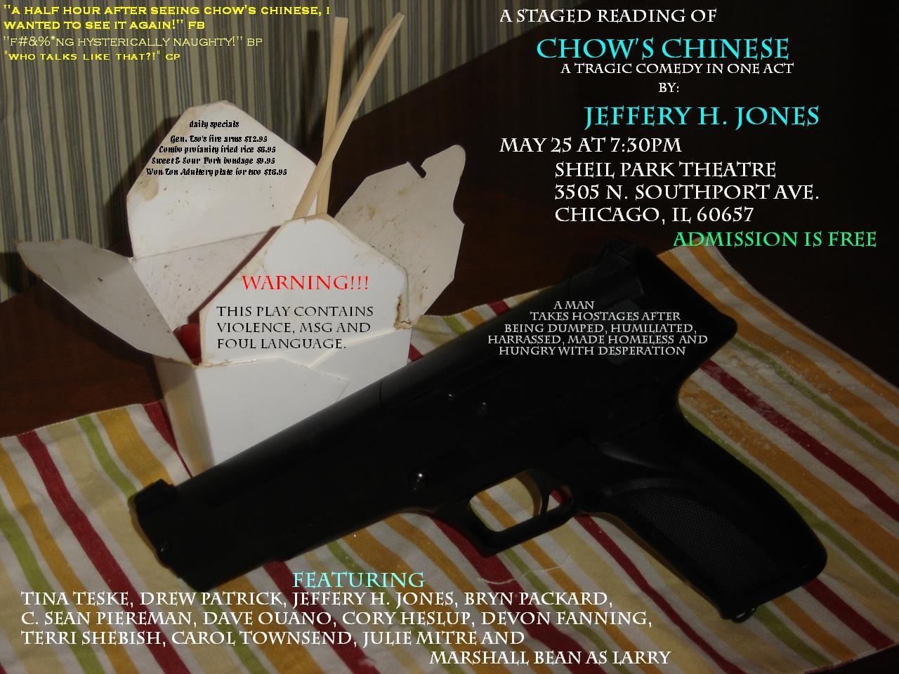
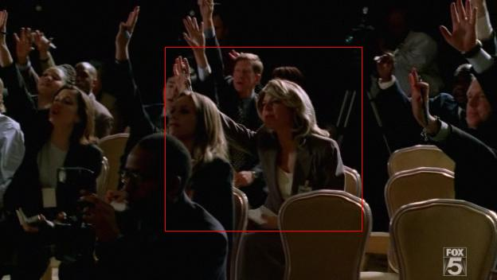

Movin' Right Along...
Carol's acting career is Movin' Right Along, as she has landed a part in an upcoming theater production of the same name. Soapbox Theatre Company will be presenting Movin' Right Along (not to be confused with the Muppet…
We apologize for the outage(s)...
Hi all, Some administrative news... you may have noticed that periodically, some of the linked files (usually the video clips), have been unavailable on this site. This was due to my hosting them from the little server…

Pray for the Fish!
(For those unfamiliar with this Randy Travis song, see here). Carol and I were baptized this weekend at our church, Willow Creek Community Church. After 25 years of beautiful weather for their annual summer baptism in…

Life After Prison Break: Chow's Chinese
So, what has our starlet been up to since Prison Break has wrapped in Chicago (and will be moving to Dallas for filming next season)? Carol recently auditioned for, was cast, and appeared in, a staged reading of "Chow's…
Prison Break Farewell...
Alas, with this season's final episode, also comes the finale of Carol's time on Prison Break. We will always remember her first appearance as "Vice-Presidential Aide"-- how long ago it seems. Who can forget "Restaurant…
1 comment
Don't Drink The Water! (Spoilers)
Yikes! What a nail-biter! Two main characters killed, one severed hand, poisoned water, and a psychopath on a bicycle! Not to mention, the stunning debut of Carol's blonde alter-ego, "Babs". Excellent! Not only was…
Season Finale tonight!
Only one hour to the Prison Break season finale tonight! Watch for the final Carol sighting (as "Babs", with blonde wig) during a vice-presidential press conference.
Prison Break - Episode 20 update
Episode 20 aired on Mayday, May 1. While no Carol sightings were evident, there were several scenes in which Carol honed her street-walking skills. While Sara sat in her car outside the bar, Carol was (once again) a…

Fun in the Sun
Last weekend, Carol and I took a break from cool and rainy Chicago to visit the sun and sand in Key West with some friends. A great time was had by all! Carol was especially pleased with the Key West Butterfly…
Prison Break Update - Episode 19
The suspense is building! Only three episodes left, according to Carol's reckoning. (The VP Press Conference is supposedly in episode 22). Episode 19 aired this Monday, April 23rd. While there were no sightings, Carol…